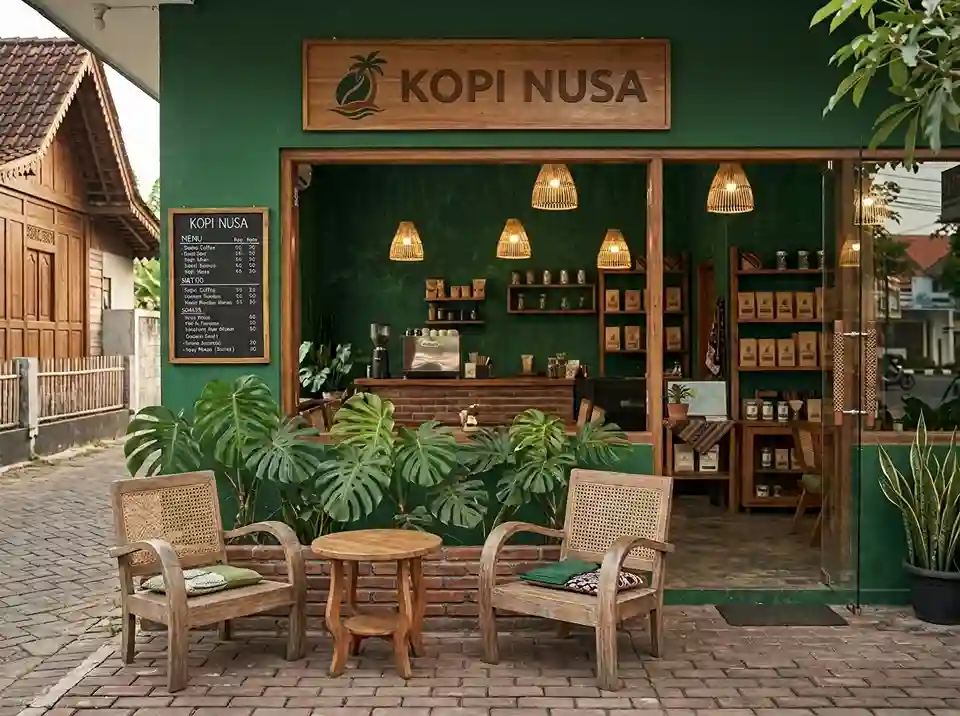

UMKM Pekalongan
Kopi Nusa
Kopi lokal pilihan untuk teman belajar, bekerja, dan berdiskusi.

Produk Unggulan

Kopi Tubruk Signature
Seduhan biji kopi lokal Pekalongan berkualitas pilihan dengan aroma rempah yang khas dan konsisten.
Rp18.000

Cold Brew Aren
Ekstraksi dingin selama 12 jam dipadukan manisnya gula aren murni. Rasanya halus dan tidak terlalu asam.
Rp22.000

Matcha Latte Cream
Pilihan non-kopi dari teh hijau Jepang murni yang dipadukan dengan susu segar yang creamy dan lembut.
Rp22.000

Es Kopi Palm Sugar Baru
Kopi susu dingin dengan gula aren asli yang manis alami, disajikan segar dengan es batu untuk menemani hari yang panas.
Rp24.000
Kunjungi & Hubungi Kami
Alamat: Jl. Hayam Wuruk No. 12, Pekalongan, Jawa Tengah
Jam layanan: Setiap hari, 08.00–20.00 WIB